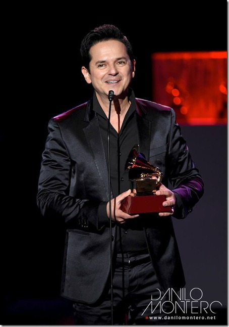
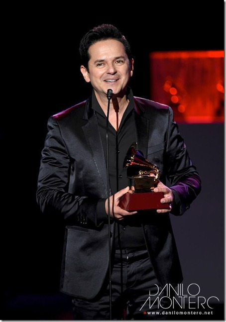

Luis Danilo Montero Carvajal (San José, Costa Rica; 1 de noviembre de 1962) es un compositor, pastor y cantante costarricense de música cristiana Ha grabado 18 discos y ha sido condecorado en los Premios Grammy, Premios Arpa y Premios Billboard. Es considerado como uno de los principales exponentes de la música de alabanza y adoración en América Latina.
 

La música es una poderosa herramienta, pero la adoración es más que eso. Ya basta de que los jóvenes se quejen de que la reunión fue aburrida. En este libro encontrará claves para líderes de alabanza y líderes juveniles que quieren acompañar a la nueva generación al trono de la gracia de Dios.

¡Siguelo en sus redes sociales!
Facebook Instagram YouTube